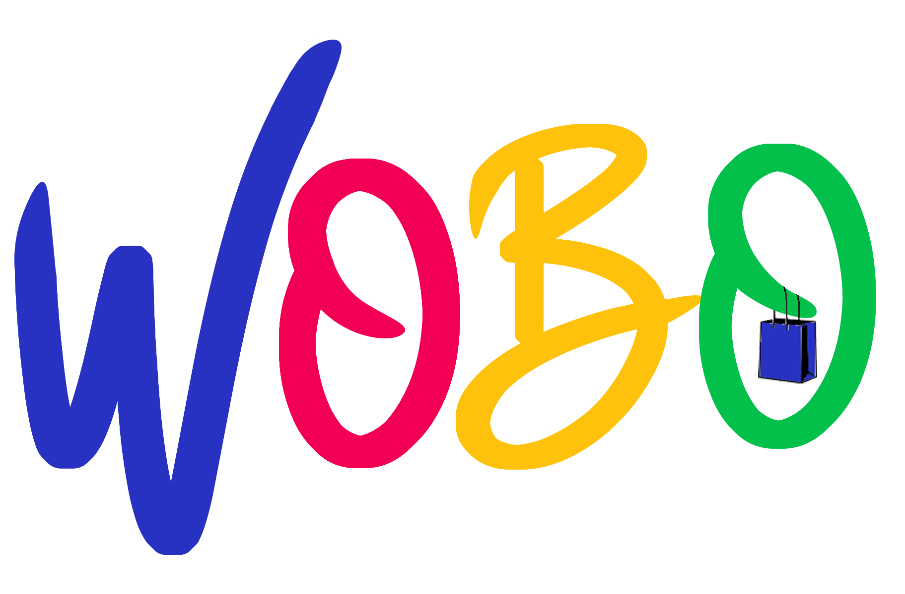

JustO E-Commerce Pvt Ltd , started its incredible journey on September 2021. It was a humble start with a mission to be present in the E-Commerce B2B space catering the Consumer Electroncis & Home Appliances , with loads of challenges & we were able to overcome & survive the tough competition from the counterparts & other peers of trade.
Went live with the mobile based Application justo4u.com on playstore & with in no time we were successful in getting our Retailers & Vendors onboarded & catering to wider geographies of South India with the strategically created DEALS & season sales across categories like LED TVS, REFRIGERATORS, WASHING MACHINES, AIR CONDITIONERS & MICRO WAVE OVENS across all the reputed BRANDS. Justo4u.com is now also a authorized Channel Sales partner / Distributor for various BRANDS across categories like LED TVs, SMALL HOME APPLIANCES.
After successfully completing about 02years JustO E-Commerce Pvt Ltd is proud to diversify its foot print in E-Commerce B2C space with its versatile strategies & service oriented policies & hence created its own B2C market place wobo .com
wobo.com is a web based market place catering to the diverse group of population across Demographies & categories in ELECTRONICS & HOME APPLIANCES. Here we have been expanded the categories by adding SMALL HOME APPLIANCES, COOK WARE , GADGETS , UNISEX FASHION & ACCESSORIES .
wobo.com moto is to give its users let it be vendors or customers a fully dynamic & versatile platform to sell & buy all the genuine products of the reputed BRANDS & LABELS with the convenience of technology making the selling & shopping experience hassle free.